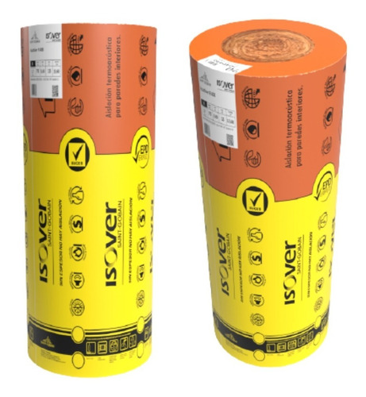
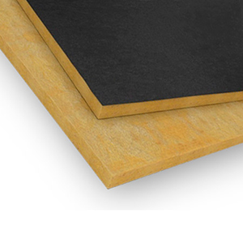
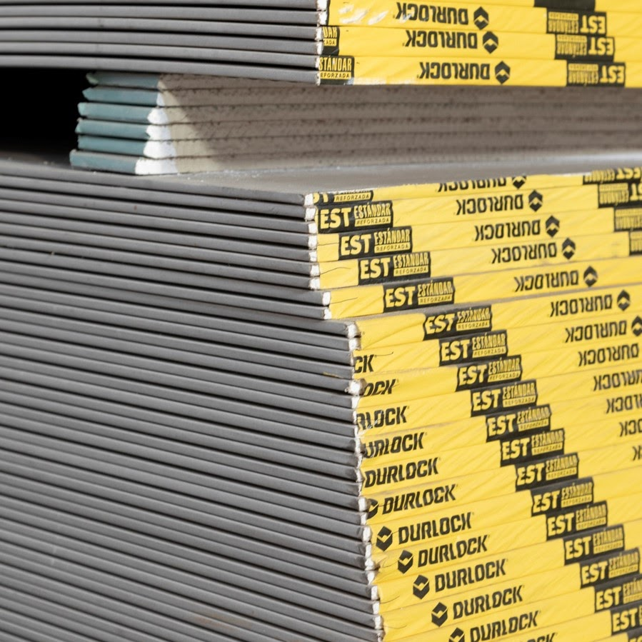
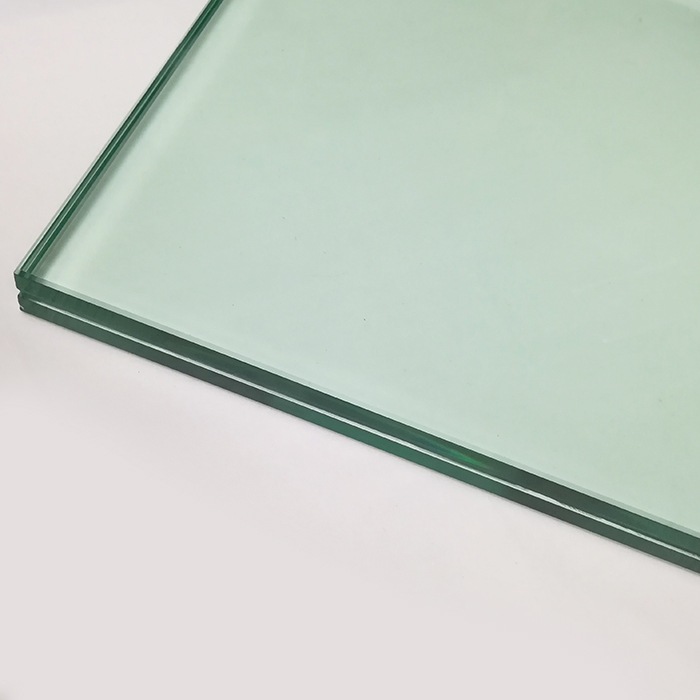

Materiales
| Material | Características | Recomendaciones |
|---|---|---|
| Lana Mineral (Roca, Vidrio) |
|
|
| Paneles Acústicos (Minerales o de Espuma) |
|
|
| Madera |
|
|
| Acero |
|
|
Productos

Lana de Vidrio Acustiver R (Isover®)

Paneles Acustiver P (Isover®)

Placas de Yeso/Cemento (Durlock®)
